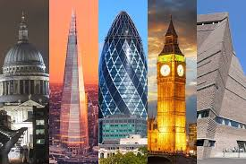

Explore London
Discover the best of London
London is a vibrant city with a rich history and diverse culture. From the iconic Tower of London to the world-renowned British Museum, there's something for everyone to explore.
Whether you're interested in art, history, or simply want to experience the bustling city life, London has it all. Don't forget to take a stroll along the Thames River and enjoy the stunning views of the city's skyline.